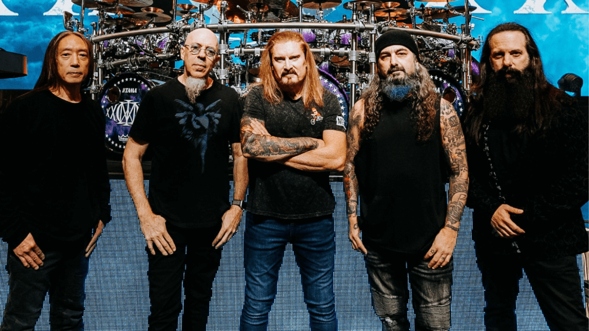

Dream Theater es una de las bandas más importantes del metal progresivo en todo el mundo. Formada en 1985 en Nueva York, se caracteriza por sus canciones complejas, solos virtuosos y shows llenos de energía. Con más de 40 años de trayectoria, sigue siendo una referencia obligada para músicos y fans del género.
